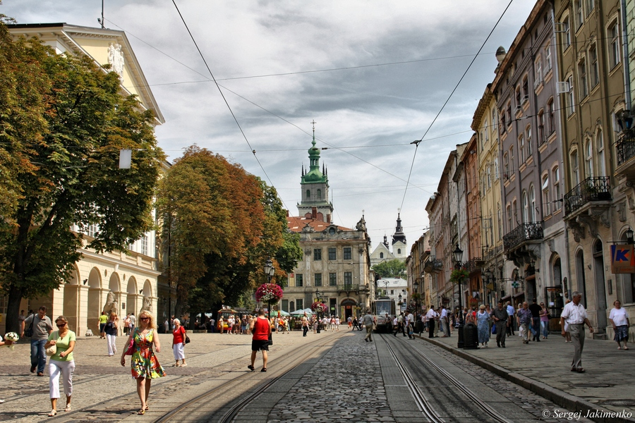

About the city Lviv
History of the city
Lviv history is as colorful and amazing as a city itself. It is filled with interesting events and outstanding figures.
Today Lviv is more than 750 years old and it has lots of stories to tell you!
City situated on the crossing of two profitable trade routes developed and flourished rapidly and became one of main trade centers of medieval Europe.
Afterwards while being a part of different countries, Lviv borrowed some parts of culture and knowledge from invaders.
Later on it transformed not only to an architectural gem, but also to the modern capital of scientific, spiritual and artistic life.
Lviv under many powers
- 1256 – 1340 – Lviv as a part of Halychyna-Volyn Principality
- 1340 – 1349 – Lviv under the rule of boyar oligarchy of Dmytro Detko from Przemysl and Danylo from Ostrov
- 1353 – Lviv under the rule of Lithuanian Prince Lubart Gedyminowicz
- 1372 – 1378 – Lviv under the rule of Governor Wladyslaw Opolczyk, practically under Hungarian protectorate
- 1378 – 1387 – Lviv under the Hungarian rule
- 1387 – 1772 – Lviv under the rule of Rzeczpospolita
- 1772 – 1918 – Lviv under the rule of the Austrian Empire
- 1914 – 1915 – Lviv under the rule of Tsar’s Russia
- 1918 – Lviv under the rule of the West-Ukrainian People’s Republic
- 1918 – 1939 – Lviv under the Polish rule
- 1939 – 1941 – Lviv under the rule of the USSR
- 1941 – 1944 – Lviv under the rule of Nazi Germany
- 1944 – 1991 – Lviv under the rule of the USSR
- From 1991 – Lviv as a part of independent Ukrainian state